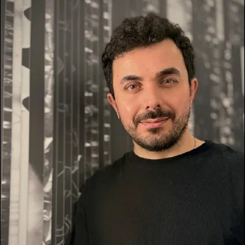
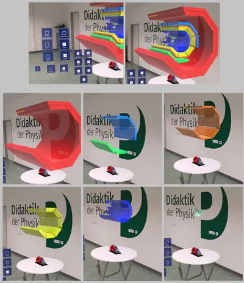
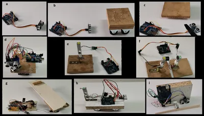
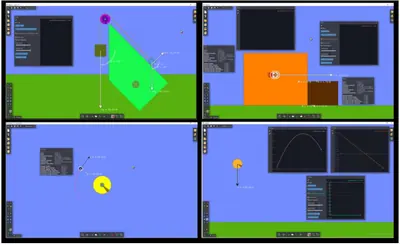

Dr. Atakan Çoban
Learning Experience Designer · Instructional Designer
Ich forsche an der LMU München und entwickle Lernangebote mit Technologie und praktischen Aufgaben.
Acht Projekte zeigen meinen Beitrag und mögliche Anwendungen in der betrieblichen Weiterbildung.
Kontakt aufnehmen
Projekte

01
KI-gestütztes personalisiertes Lernen
Ich entwickelte einen Sprachassistenten, der gesprochene Antworten auswertet und individuelles Feedback für einen zweiten Versuch gibt.
Gespräche üben und Feedback zu konkreten Anforderungen der Rolle erhalten.

02
AR/VR-Lernerlebnisse
Ich entwickelte eine HoloLens-App, die einen interaktiven 3D-Detektor mit einem physischen LEGO-Modell verbindet.
Anlagen kennenlernen, Inspektionen angeleitet durchführen und Abläufe wiederholt üben.
03
Maschinelles Lernen für Leistungseinblicke
Im Team analysierte ich Blickdaten, um Unterschiede zwischen Aufgabentypen zu erkennen und spätere Lernangebote darauf abzustimmen.
Wiederkehrende Fehler erkennen und Verbesserungen mit Ausgangswerten vergleichen.
04
KI-gestützte App- & Lerninhaltsentwicklung
Mit KI-Werkzeugen entwickelte ich dieses Portfolio und Prototypen für Rollenspiele, Prozesssimulationen und adaptives Üben.
Interaktive Szenarien entwerfen, im Team prüfen und mit Lernenden testen.

05
Praxisorientiertes technisches Lernen
Ich entwickelte Arduino-Übungen, in denen Lernende Sensordaten erfassen und physikalische Systeme untersuchen.
Trainingskits und Workshops für Aufbau, Messung und Fehlersuche entwickeln.

06
Simulationsgestütztes Lernen
Ich entwickelte Algodoo-Übungen, in denen Lernende Vorhersagen treffen und durch gezielte Änderungen überprüfen.
Entscheidungen in Arbeitsabläufen üben und das Verhalten von Anlagen erkunden.
07
Softwaretraining und digitale Kurse
Ich erstellte einen türkischsprachigen Udemy-Kurs mit 13 eigenen Algodoo-Anwendungen.
Neue Software durch Demos, angeleitete Aufgaben und selbstständiges Üben vermitteln.
08
Problembasierte Lerngestaltung
Ich entwickelte Fälle zur Quantenphysik, in denen Lernende Erklärungen vergleichen und Schlussfolgerungen begründen.
In Fallworkshops Informationen abwägen und Entscheidungen begründen.
Kontakt
München, Deutschland